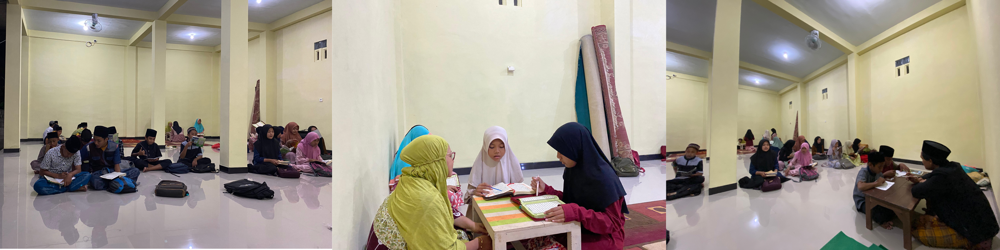

Tentang

Terdapat 3 Program Unggulan:
- Percepatan Baca Kitab Kuning
- Tahfidzul Al-Quran
- Bahasa Arab
Fasilitas:
- Kamar mandi dalam
- Ruang belajar
- Asrama yang nyaman
- Bebas uang gedung
- Free WiFi
- Khitobah bahasa asing
Kegiatan
- Kajian Fiqih, Adab, dan Al-Qur'an
- Tarawih Berjamaah
- Praktek dari Materi
- Qiyamul Lail
- Tadarrus Al-Qur'an
- Hafalan Hadits Pilihan
- Menghafal Surat
- Buka Bersama
- Pembiasaan sholat berjamaah
- Qiyamul lail
- Tahsinul qiroatil Al-Qur'an
- Pengetahuan dasar
- Baca kitab (Nahwu shorof)
- Ratibul hadad (khusus malam jum'at)
- Fatuhatil barokat (khusus malam senin)